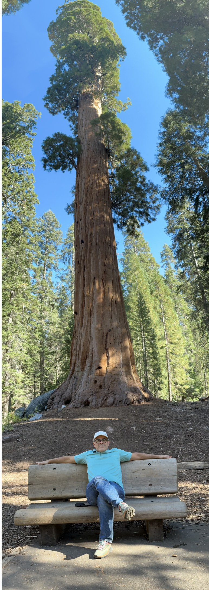
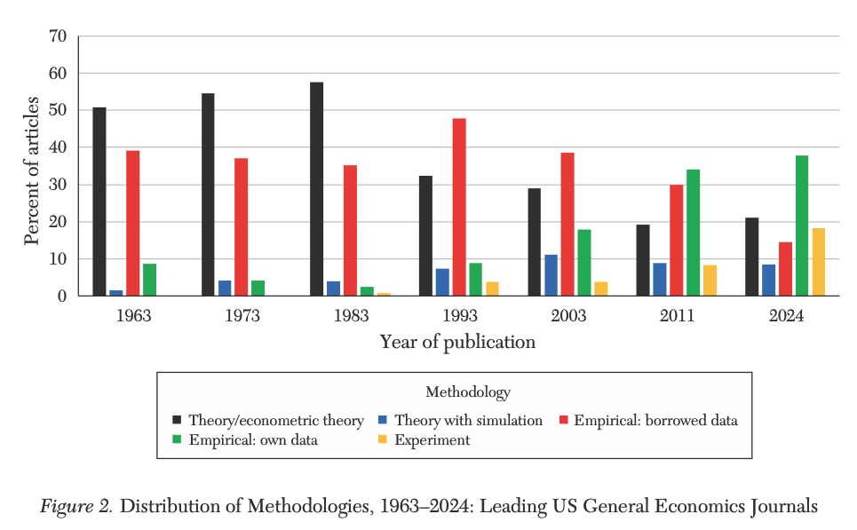
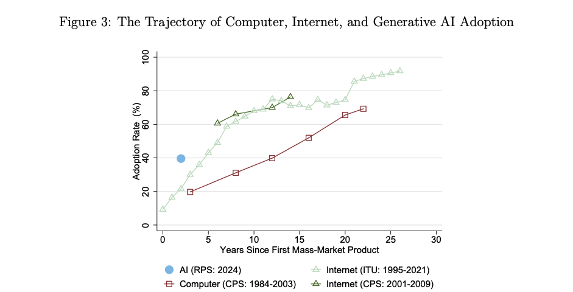
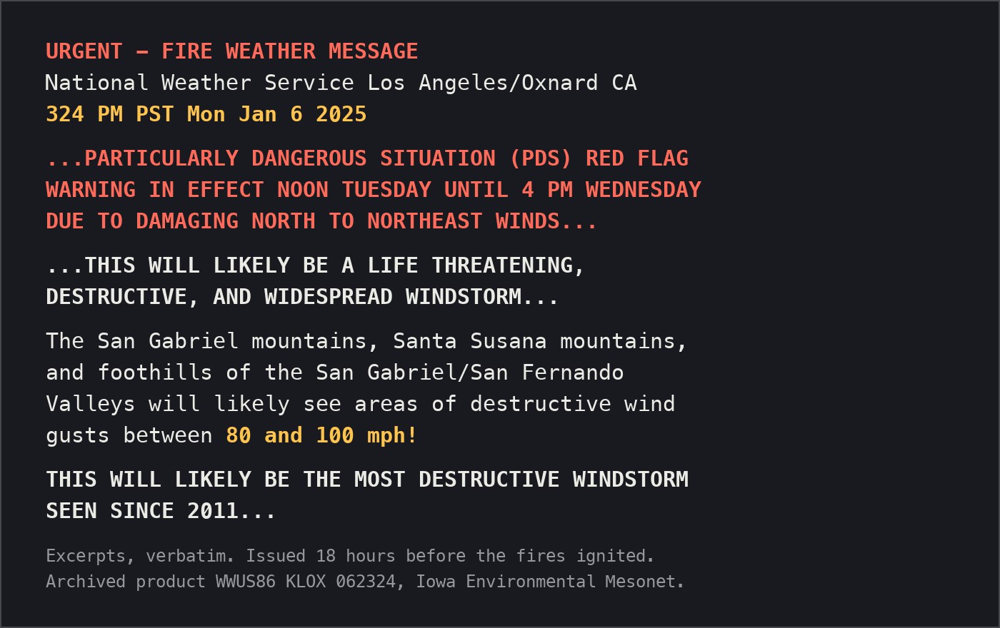
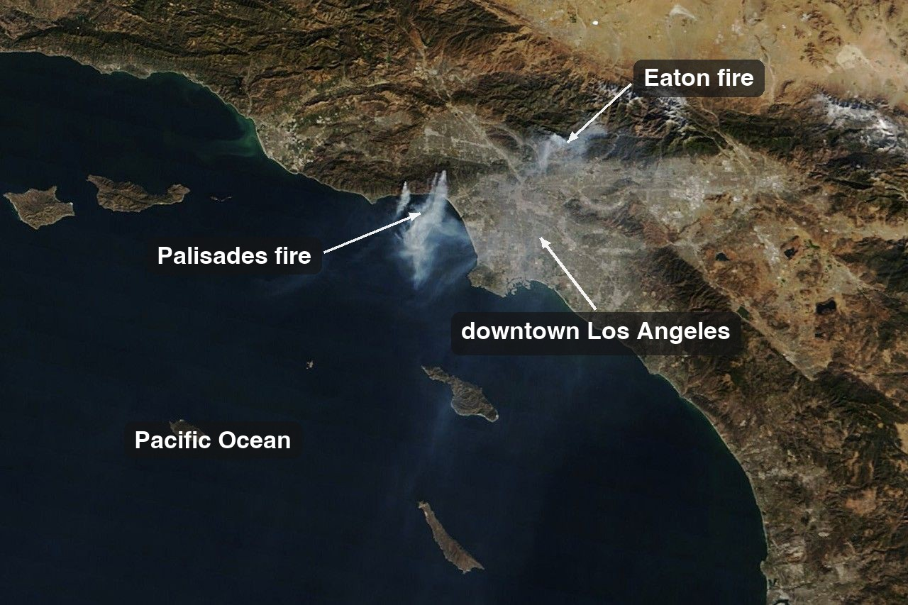

R.version.stringAEM 6850
Empirical Methods for Applied Economists
Prof. Ariel Ortiz-Bobea
1 · Overview
Tuesday, August 25, 2026

Polls open
pollev.com/arielortizbobea090 · text arielortizbobea090 to 22333
A short background survey. Your answers shape how I teach the next few weeks. Graded quizzes and attendance will run on this same tool all semester.
Objectives
By the end of this session you can:
- State what the course covers and navigate the course map.
- Run a script and find its outputs.
- Write down what a dataset should show, run the code, and check.
- Get your private course repository (repo) and commit a change in the browser.
About me
- Prof. Ariel Ortiz-Bobea: Dyson School and the Brooks School of Public Policy; at Cornell since 2014.
- Before Cornell: Resources for the Future; PhD, University of Maryland; Ministry of the Environment of the Dominican Republic.
- Research: how people cope with environmental change, especially how climate change affects the economy, and agriculture in particular. More at arielortizbobea.github.io.

Motivation
- Every empirical paper rests on data somebody found, cleaned, checked, and reshaped.
- Methods courses start after that work is done. This course teaches it.
Economics is now an empirical field

Hamermesh (2025), update to “Six Decades of Top Economics Publishing” (JEL).
AI is arriving faster than the PC or the internet

Bick, Blandin & Deming (2024), “The Rapid Adoption of Generative AI”.
AI is changing research work
- It writes competent first drafts: code, summaries, extraction, text.
- This reduces the marginal cost of doing research.
- But increases the chances of making costly and yet potentially invisible mistakes.
- Key emerging skill: supervise and verify in robust and efficient ways.
AI models draft and execute code. You supervise and verify.
Error-free is not correct. A wrong number from code that runs clean is the key challenge of the AI era; this course builds the skills to catch it.
The course map
Twenty-eight meetings, two parts.
- Part I — foundations (1–12). Learn how to work with basic tabular data. Coding “by hand” through session 7. AI assistance enters in session 8.
- Part II — applications (13–28). We explore various families of unconventional data types and ways to acquire and process them.
Six families of data types
- messy tables: clean real spreadsheets
- text: from words into variables
- documents: tables out of PDFs and scans
- images: pixels into measurements
- audio: speech, pauses, tone as data
- maps & rasters: places, joins, exposures
Cross-cutting channels: downloads, APIs, scraping, vendors, archives, your own collection.
What we do not cover
- No causal inference, no econometric theory.
- No machine-learning theory: we use models, we do not derive them.
- No video, no network data (at least this year).
Why R?
- The habits transfer: acquire, clean, check, verify work the same in any language.
- R is free, open source, and built for data analysis. One install covers the course.
- Wide user base across fields, excellent graphics, answers easy to find.
- Python later is cheap; AI translation makes it cheaper. The habits carry.
Install party
Do these in order: RStudio looks for R when it starts, so install R first.
1. Install R. cran.r-project.org → your operating system.
- macOS: there are two builds. Apple silicon (M1–M4) needs the
arm64installer; older Intel Macs need thex86_64one. Apple menu → About This Mac tells you which you have. - Windows: click “base”, then the download link. You do not need Rtools.
2. Install RStudio. posit.co/download/rstudio-desktop → the free Desktop version. It also bundles Quarto, a tool that turns scripts into reports (we use it later in the course). There is nothing else to install.
Check it worked
3. Open RStudio (not R) and type this into the Console, bottom left:
You should see version 4-point-something. If you see an error, or RStudio says it cannot find an R installation, raise your hand.
4. One setting, right now. Tools → Global Options → General: uncheck “Restore .RData into workspace at startup”, and set “Save workspace to .RData on exit” to Never.
Laptop refusing? posit.cloud is RStudio in a browser. Free, works today.
The four panes
- Console (bottom left): runs code the moment you press Return.
- Source (top left): scripts: code you keep.
- Environment (top right): the objects you have made.
- Plots / Files (bottom right): figures and your folder.
Today: type in the Console. Keep code worth keeping in Source.
Onboarding: get your repo
- Everyone gets a private repository on GitHub: your course workspace.
- Every homework is handed in there. Nothing by email, nothing on Canvas.
- Today: account → repository → one commit. The pipeline works before any grade rides on it.
Everyone finishes this today, in the room. It runs entirely in a browser, so a half-installed laptop is no obstacle.
The three steps
1. Account. github.com/signup. Pick a username you would put on a CV.
2. Form. Your name · NetID · GitHub username. Scan, or open the Sign-up form link on Canvas:
3. Accept the invitation. We send the invitations in batches during class. Check email or github.com/notifications, then click Accept invitation.
Onboarding: your first commit
4. Edit the README in the browser. Click README.md, then the pencil icon. Fill in the three lines:
Name:
Program:
One dataset or question I would like to be able to handle by December:5. Commit. Green “Commit changes…” button, top right. Type a short message (add my intro), leave “Commit directly to the main branch” selected, and click Commit changes.
6. Look at what you did. Reload the repository’s front page. Your text is there, and above it your message, add my intro, with a timestamp.
You just used version control
What just happened. You made a commit: a permanent, timestamped snapshot of your work. No git install, no terminal: the browser did it.
You will hand in the first few homeworks the same way: edit or drag files onto the repository page, then commit. Session 7 will explain what git did here.
7. Check in. The last poll of the day asks for your repository’s URL. Copy it from the address bar and paste it in. This is how we take attendance today, and it shows us your setup worked end to end.
The warning, the day before

The January 2025 Los Angeles fires

Both ignited January 7, 2025 in Santa Ana winds near 100 mph, destroying about 16,000 structures. NASA Terra/MODIS.
What should the data show?
The story so far, from the previous slides: both fires exploded on January 7, driven by a violent windstorm, in the middle of a drought. Strong wind spreads fire; dry ground feeds it.
We are about to plot the strongest daily wind gust in downtown Los Angeles, December 2024 through February 2025.
First write down what the data should show if the story is right. Turn each into a number or a date.
- Which date should show the biggest gust?
- A typical winter day gusts near 20 km/h. How tall should the spike be?
- What was December’s total rainfall, in millimetres?
Step 1: Pull the data
The data comes from Open-Meteo, which serves historical weather as a plain CSV over a URL. No account, no key, no package.
url <- paste0(
"https://archive-api.open-meteo.com/v1/archive",
"?latitude=34.05&longitude=-118.24",
"&start_date=2024-12-01&end_date=2025-02-28",
"&daily=wind_gusts_10m_max,wind_speed_10m_max,",
"temperature_2m_max,relative_humidity_2m_min,precipitation_sum",
"&timezone=America%2FLos_Angeles&format=csv"
)
la <- read.csv(url, skip = 3)
names(la) <- c("date", "gust", "wind", "tmax", "rh_min", "precip")
la$date <- as.Date(la$date)Step 2: Look at what arrived
Never compute on a file you have not looked at. Three lines, every time:
#> [1] 90 6#> 'data.frame': 90 obs. of 6 variables:
#> $ date : Date, format: "2024-12-01" "2024-12-02" ...
#> $ gust : num 20.2 12.2 17.6 14.8 15.8 16.9 12.2 19.4 16.9 16.2 ...
#> $ wind : num 7.5 3.8 6.3 4 5 5 4.9 8 6.3 6.6 ...
#> $ tmax : num 24.5 22.6 21.5 19.7 21.2 25 26.3 21.2 19.7 20.2 ...
#> $ rh_min: int 12 19 36 52 28 14 10 27 27 6 ...
#> $ precip: num 0 0 0 0 0 0 0 0 0 0 ...#> Min. 1st Qu. Median Mean 3rd Qu. Max.
#> 10.80 16.90 20.00 22.71 25.60 65.90Step 3: One plot
plot(la$date, la$gust,
type = "h", col = "grey30",
xlab = "", ylab = "Maximum wind gust (km/h)",
main = "Downtown Los Angeles, daily maximum gust")
abline(h = median(la$gust), lty = 2, col = "grey60")
abline(v = as.Date("2025-01-07"), col = "#b31b1b", lwd = 2)
text(as.Date("2025-01-07"), max(la$gust), " Jan 7",
col = "#b31b1b", adj = c(0, 1))
Step 4: Reconcile
Now compare the screen against what you wrote down.
#> [1] "2025-01-07"#> [1] 3.295#> [1] 0.5- The windiest day of the winter is the day the fires started.
- It was 3.3× a normal day.
- December’s total rainfall: half a millimetre.
Quick reference
On the session page: the install checklist, every command from today, and the links.
:::
AEM 6850 · Session 1